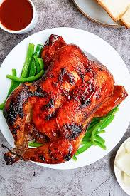
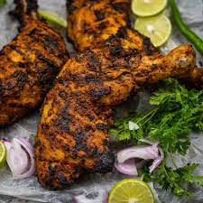
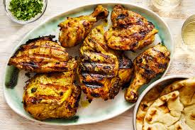

TANDOORI

Ingredients
- Chicken
- Curd
- Garam masala
- Coriander powder
- Pepper powder
- Turmeric
- Chili powder
- Ginger garlic paste
- Kasuri methi
- lemon juice
- oil
- salt
- Butter
- Ghee
- Charcoal
Calorie Chart
| Nutrients |
Quantity |
| Carbs |
11g |
| Dietary Fiber |
2g |
| sugar |
1g |
| Fat |
6g |
| Saturated |
2.1g |
| Polyunsaturated |
0g |
| Protein |
10g |
| Sodium |
46mg |
| Potassium |
214mg |
| cholestrol |
67.7mg |
| vitamin A |
0% |
| vitamin C |
0% |
| calcium |
0% |
| Iron |
0% |



FUN FACTS
- The dishes like tandoori chicken may have started during in the Harappan civilization.
- Tandoori chicken started in the Punjab as a dish. It started before the partition of India. It was introduced in Moti Mahal Delux restaurant-Delhi
- The name comes from the type of cylindrical clay oven, a tandoor, in which the dish is traditionally prepared.